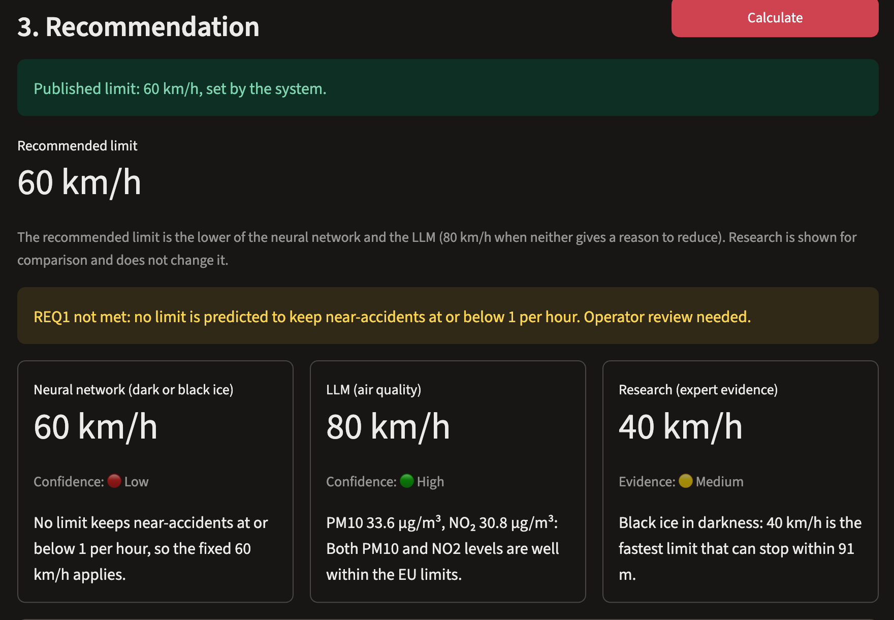
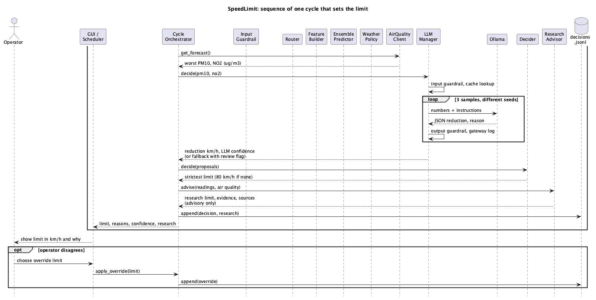
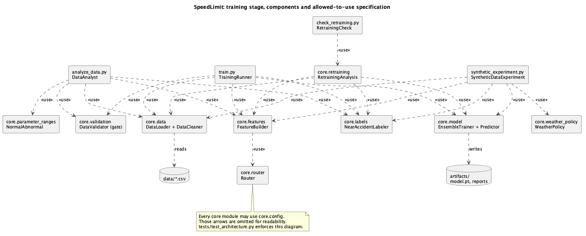

Software Engineering for AI · Case study
SpeedLimit
A highway speed limit that reacts to light, weather and air quality.
Gheorghe TutunaruPresenter
Mihail LupascoPresenter
November 2026Case study SpeedLimit
A highway speed limit that reacts to light, weather and air quality.
Too little light
Water on the road below 0 °C
PM10 or NO₂ too high
None of the above
Safety and travel time
Clean air
Stay in control
Know why a limit was set
Safe behaviour on failure
No personal data
| SPEC1 | Dark: below 500 mlx |
| SPEC2 | Black ice: water above 1000 µm and below 0 °C |
| SPEC3 | Network: learns near-accidents from weather and limit |
| SPEC4 | Near-accident: skidding, or too close to a car or guardrail |
| SPEC5 | Poor air: above EU limits, PM10 50 and NO₂ 200 µg/m³ |
| SPEC6 | Limits: 40 to 80 km/h, steps of 10 |
Spec in millilux, sensors in lux

| Accident hours 1–24, sensors 0–23 | shifted |
| Sensor type “T” used twice | resolved |
| Undocumented sensor | documented |
| Licence plates | dropped |
The AI only proposes. Simple rules decide.
Near-accidents per hour
for each candidate limit: 40, 50, 60, 70 km/h
10 networks (ensemble)
9 → 16 → 8 → 1, Poisson loss
No valid answer → rule-based fallback and an operator review flag.
better than always guessing the average
The data is random. With a planted signal, the same code learns it.
Dark or icy → 60 km/h + operator review
They caught errors before the code.
It showed the network has no skill.
Rules, fallbacks and a human keep it safe.
| Stakeholder | Main interest | Stakeholder | Main interest |
|---|---|---|---|
| Drivers | Safety, travel time | Data protection officer | Licence plates |
| Passengers, people after a breakdown | Safety | Environmental agency | Air-quality targets |
| Operator management | Cost, liability | Residents | Noise, air |
| Control-room operators | Trust, override | API and weather providers | Interface stability |
| Sensor and sign maintenance | Failure alerts | Navigation app makers | Machine-readable limits |
| Police, emergency services | Current limits | LLM provider | Usage terms |
| Ministry, road regulators | Legality | Developers, testers | Testability |
| EU AI Act authorities | Conformity | Works council | No monitoring via logs |
| Term | Meaning |
|---|---|
| Near-accident | Accident row with CloseCarCm, CloseGuardrailCm or SkidAngle |
| Accident | Row with Damage set; not a near-accident |
| Dark / black ice | SPEC1 / SPEC2 |
| Candidate limit | 40, 50, 60 or 70 km/h asked of the network |
| Support | Hours of dark or icy evidence at a limit |
| Operator | Control-room staff who can override |
| Added system requirement |
|---|
| REQ4 Several reasons apply → the strictest limit |
| REQ5 Recalculate at least once per hour |
| REQ6 Invalid input or failure → never a silently higher limit; alert |
| REQ7 Operator can override at any time |
| REQ8 Every limit logged with reason and source |
| Quality | Non-functional requirement |
|---|---|
| Availability | A limit is displayed 99.99% of the time |
| Latency | New limit within 60 s of a reading |
| Reliability | One failed sensor alone cannot change the decision |
| Safety | No failure raises the limit without review |
| Security | Only authenticated operators publish |
| Privacy | Licence plates never used in training |
| Auditability | Each decision reconstructable for 5 years |
| Other | Explainability, maintainability, sustainability, testability |
| Assumption |
|---|
| Accident hours 1–24 = sensor hours 0–23 |
| Sensor 16 is traffic; 19 is temperature |
| Wind unit “hm/h” is a typo for km/h |
| Near-accidents are recorded reliably |
| January is representative (it may well not be) |
| EU limits: PM10 50, NO₂ 200 µg/m³ |
| From | Test input | Expected |
|---|---|---|
| SPEC1 | 499 mlx · 500 mlx | dark · not dark |
| SPEC2 | 1001 µm at −1 °C · at 0 °C | black ice · no ice |
| REQ2 | PM10 120, NO₂ 250 µg/m³ | reduce by 20–30 km/h |
| REQ4 | dark and poor air together | the stricter limit |
| REQ6 | impossible sensor value | keep the current limit |
| REQ7 | operator publishes 50 km/h | published and logged |
| Privacy | load the accident file | no licence plates left |
automated tests, written test-first
At least 5 per component. An architecture test fails on any forbidden import.
| Illuminance (mlx) | Water (µm) | Temp. (°C) | Why | Network used? |
|---|---|---|---|---|
| 500 | 1000 | −1 | not dark; water not above 1000 | No |
| 500 | 1001 | 0 | not dark; 0 °C is not below zero | No |
| 500 | 1001 | −1 | black ice | Yes |
| 499 | 1000 | −1 | dark | Yes |
| 499 | 0 | 20 | dark, warm and dry | Yes |
| 100,000 | 5000 | −10 | black ice in daylight | Yes |
| 100,000 | 5000 | 5 | wet but above zero | No |
Dark at 0 and 499 mlx; not at 500 or 501
Black ice at (1001 µm, −1 °C) and (5000, −20); not at (1000, −1), (1001, 0), (1000, 0)
0.5 lux = 500 mlx
Both reasons reported together
| Golden case | PM10 / NO₂ (µg/m³) | Expert range | Live LLM accepted |
|---|---|---|---|
| Clean air | 20 / 40 | 0 | 0–10 |
| Slight exceedance | 55 / 90 | 0–10 | 0–20 |
| Clear exceedance | 120 / 250 | 20–30 | 10–40 |
| Severe | 400 / 500 | 30–40 | 20–40 |
| Plausibility | 0 / 0 | 0 | 0–10 |
| Reductions in km/h. Live result: 5 of 5 in range. The rule-based fallback must meet the expert range. | |||
| Robustness case | Expected |
|---|---|
| Reply 15, −10, 80, true, “ten”, missing, not JSON | Rejected by output guardrail |
| Input −1, 2001, NaN, text | Rejected; LLM never called |
| Answers 20, 10, 20 | 20; Medium confidence |
| Answers 0, 10, 30 (tie) | 30, the larger; Low |
| All invalid, or LLM down | Fallback + review flag |
| Every call | Logged with seed and reply |
tests passing, including 5 live golden cases against the real LLM
Allowed-to-use rules enforced by a test · 7 UML diagrams
Caught real bugs: a missing review flag, scheduler timing, GUI issues.

Plain code applies SPEC1 and SPEC2 and decides whether the network runs at all.
Only the LLMManager may reach the LLM, through its guardrails and log.
An architecture test fails if any import breaks the allowed-to-use rules.

The running GUI, “icy night” scenario: 60 km/h, REQ1 not met, operator review requested.



−15 %, p = 0.0008, while every input stayed the same.
on all 17 sensors: identical readings
skill vs. the Year N average
cross-validated skill
Find out why the file repeats Year N. If it is genuine, retraining would only shift the base rate, not add skill.
dark or icy hours in which any limit is predicted at ≤ 1 near-accident/h (Year N replay)
Learned the backwards pattern: slower looks riskier.
in 389 of 389 hours, icy nights too
60 km/h has the most evidence: 230 hours.
in 389 of 389 hours

| Assumed | Synthetic test | Real days |
|---|---|---|
| Faster = riskier | +12.8 % | −8.2 % |
| Slower = riskier | +20.6 % | −2.5 % |
Both claim REQ1 is met in 389 of 389 hours, with opposite limits: 50 vs. 70 km/h.
Imitating the real data adds nothing: within noise even at 20× the data.
The research advisor is shown beside the result and never sets the limit.
| When | Who |
|---|---|
| Every review flag | Control-room operator approves |
| Any time | Operator overrides (on the loop) |
| Near-accident labels | Road-safety analyst checks |
| Retraining release | Data scientist + safety officer |
Not in the loop: plain router rules and clear hours, where people only add delay.
Why are its sensor readings identical to Year N?
Road section, period, measurement. Is 1/h realistic when clear hours run at 1.33/h?
Vary the limit in dark and icy hours.
Real speeds; near-accidents per 1,000 cars; full year, several sections.
Research advisor as the start; an operator stays in charge.
for the trial: ≈ 260 h per limit, about 3 Januaries on this road
| Change request | What changes | Why so little (or so much) | Impact |
|---|---|---|---|
| Some temperature sensors report Fahrenheit | Sensor mapping in the configuration and one conversion in the cleaner; retrain if the training data changes | Only the cleaner knows raw units; everything after it sees °C | Small |
| Only skidding counts as a near-accident | Call the labeler with skidding only, then validate and retrain | The label definition lives in one place | Small |
| Electric cars exempt from air-quality limits | The Decider returns two limits; cycle, GUI and log carry both; signs must show two limits; a new requirement | “One limit for everyone” was an architectural assumption | Large |